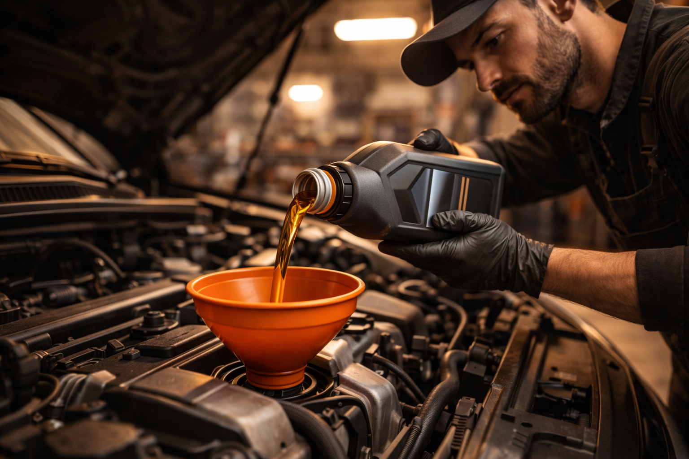

Vidange
Vidange moteur professionnelle avec huile de qualité et filtres neufs. Ali-Ka prend soin de votre moteur depuis plus de 22 ans.
Vidange moteur professionnelle avec huile de qualité et filtres neufs. Ali-Ka prend soin de votre moteur depuis plus de 22 ans.

L'huile moteur, c'est un peu le sang de votre voiture. Avec le temps et les kilomètres, elle s'épaissit, se charge en impuretés et perd ses propriétés lubrifiantes. La vidange, c'est simplement lui redonner un sang neuf. Chez Ali-Ka, Avenue des Casernes 10 à Etterbeek, nous utilisons exclusivement des huiles de grandes marques, conformes aux préconisations de votre constructeur, pour que votre moteur retrouve des conditions de fonctionnement optimales.
Concrètement, chaque vidange comprend trois choses : le remplacement de l'huile usagée, la pose d'un filtre à huile neuf et un contrôle attentif des niveaux (liquide de refroidissement, liquide de frein, lave-glace). C'est un trio de base, mais il fait toute la différence.
Notre atelier se trouve à deux pas du Parc du Cinquantenaire et de la Gare d'Etterbeek, ce qui le rend facile d'accès depuis Ixelles, Schaerbeek, Woluwe-Saint-Lambert et le reste de la région bruxelloise. Moteur essence ou diesel, peu importe : nous sélectionnons l'huile et les filtres qui correspondent exactement à votre motorisation, pour une lubrification sans compromis et une protection maximale des pièces internes.
Imaginez un mécanicien qui connaît votre voiture aussi bien que votre médecin vous connaît. C'est exactement ce que vous trouverez chez Ali-Ka. Avec plus de 22 ans d'expérience, notre équipe a vu passer des milliers de moteurs et sait repérer le moindre signe d'usure. Voici ce qui rend notre service de vidange à Etterbeek particulier :
Il y a un point que beaucoup d'automobilistes sous-estiment : la conduite en ville use l'huile plus vite qu'on ne le pense. Les trajets courts, les embouteillages, les arrêts-redémarrages incessants... tout cela empêche le moteur d'atteindre sa température idéale, et l'huile se dégrade plus rapidement. Pour les conducteurs d'Etterbeek, du quartier européen et de la Place Jourdan, raccourcir les intervalles de vidange est souvent une sage précaution.
Ce n'est pas qu'une question de mécanique. Selon l'AWSR, un véhicule correctement entretenu consomme jusqu'à 25 % de carburant en moins. Autrement dit, une vidange régulière, c'est aussi bon pour votre portefeuille que pour votre moteur.
Quand on parle de vidange, beaucoup pensent uniquement au changement d'huile. En réalité, c'est l'occasion idéale pour faire un bilan de santé rapide de votre véhicule. Chez Ali-Ka à Etterbeek, nous en profitons systématiquement pour inspecter l'état de vos filtres (filtre à air, filtre habitacle) et réaliser un diagnostic visuel du moteur. Si quelque chose attire notre attention, nous vous l'expliquons simplement et vous recevez un devis clair avant toute intervention supplémentaire.
Vous avez besoin d'aller plus loin ? Un diagnostic moteur à Etterbeek complet est possible grâce à notre équipement professionnel.
Notre conseil : regroupez vos vérifications. Pendant votre vidange, faites contrôler le liquide de refroidissement, l'état de vos freins ou l'usure de vos pneus. C'est le principe du bon entretien : une seule visite chez Ali-Ka, et votre voiture repart en pleine forme.
En général, une vidange est recommandée tous les 15 000 à 20 000 km ou une fois par an. En conduite urbaine à Bruxelles, avec des trajets courts et fréquents, un intervalle de 10 000 à 15 000 km peut être préférable. Ali-Ka vous conseille selon votre véhicule et votre usage.
Le prix varie selon le type d'huile et le filtre requis par votre véhicule. Nous proposons des tarifs compétitifs avec huile de qualité et filtre à huile neuf inclus. Appelez le 02 647 47 01 pour un devis personnalisé.
Oui, une vidange standard prend entre 30 et 45 minutes. Vous pouvez patienter sur place ou profiter de la proximité de la Place Jourdan et du Cinquantenaire.
Ali-Ka utilise des huiles de grandes marques conformes aux spécifications de votre constructeur (5W-30, 5W-40, 0W-20, etc.). Nous vous conseillons l'huile adaptée à votre motorisation, essence ou diesel.
Un garage indépendant comme Ali-Ka à Etterbeek utilise des huiles de qualité équivalente aux concessionnaires, conformes aux spécifications constructeur, à un tarif en moyenne 20 à 30 % inférieur. Votre garantie constructeur est préservée tant que l'entretien respecte le carnet d'entretien.